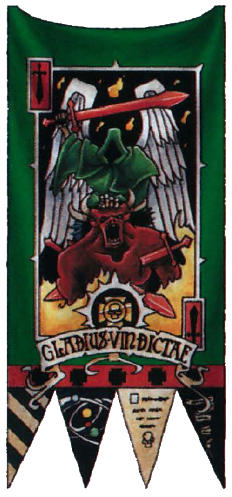

Dark Angel, Lionel Pigot Johnson
DARK Angel, with thine aching lust
To rid the world of penitence:
Malicious Angel, who still dost
My soul such subtile violence!
Because of thee, no thought, no thing,
Abides for me undesecrate:
Dark Angel, ever on the wing,
Who never reachest me too late!
When music sounds, then changest thou
Its silvery to a sultry fire:
Nor will thine envious heart allow
Delight untortured by desire.
Through thee, the gracious Muses turn,
To Furies, O mine Enemy!
And all the things of beauty burn
With flames of evil ecstasy.
Because of thee, the land of dreams
Becomes a gathering place of fears:
Until tormented slumber seems
One vehemence of useless tears.
When sunlight glows upon the flowers,
Or ripples down the dancing sea:
Thou, with thy troop of passionate powers,
Beleaguerest, bewilderest, me.
Within the breath of autumn woods,
Within the winter silences:
Thy venomous spirit stirs and broods,
O Master of impieties!
The ardour of red flame is thine,
And thine the steely soul of ice:
Thou poisonest the fair design
Of nature, with unfair device.
Apples of ashes, golden bright;
Waters of bitterness, how sweet!
O banquet of a foul delight,
Prepared by thee, dark Paraclete!
Thou art the whisper in the gloom,
The hinting tone, the haunting laugh:
Thou art the adorner of my tomb,
The minstrel of mine epitaph.
I fight thee, in the Holy Name!
Yet, what thou dost, is what God saith:
Tempter! should I escape thy flame,
Thou wilt have helped my soul from Death:
The second Death, that never dies,
That cannot die, when time is dead:
Live Death, wherein the lost soul cries,
Eternally uncomforted.
Dark Angel, with thine aching lust!
Of two defeats, of two despairs:
Less dread, a change to drifting dust,
Than thine eternity of cares.
Do what thou wilt, thou shalt not so,
Dark Angel! triumph over me:
Lonely, unto the Lone I go;
Divine, to the Divinity.